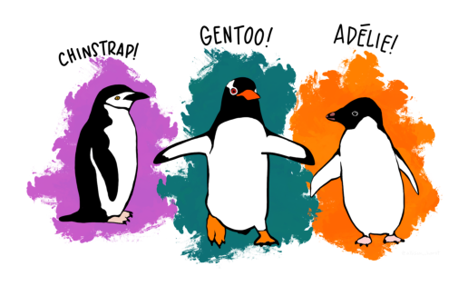
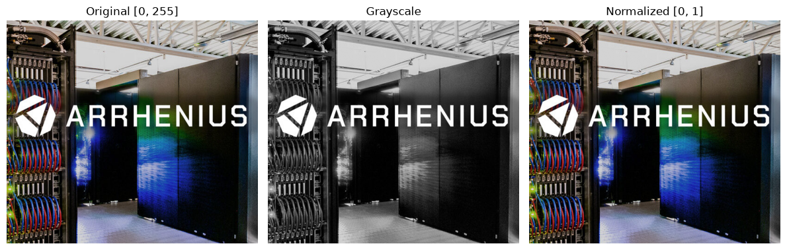
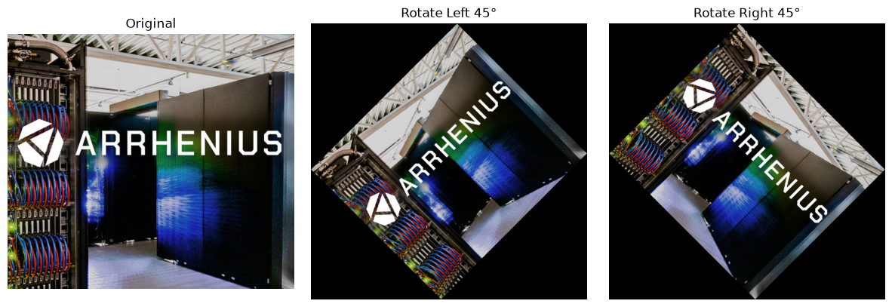
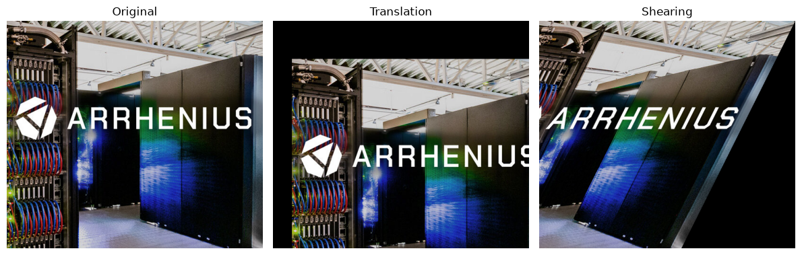
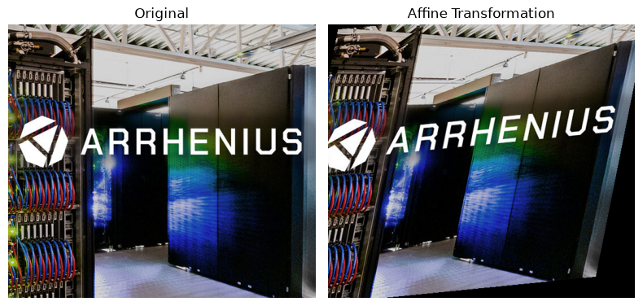

Transforming Image Data
We come across image data every day, often without even realizing how much information it contains. From photographs and medical scans to satellite images, social media posts, security cameras, and images captured by our smartphones, visual data has become an important part of our digital world. Image data is essential information represented as pixels, where each pixel contains values that describe properties such as color and intensity. Understanding how images are represented and how we can work with these pixel values is an important first step in computer vision and image-based applications.
In this episode, we will focus on the practical transformation of image data and explore the common steps involved in preparing images for analysis and applications. We will start by learning how to load and inspect image data, and then move on to important transformations such as resizing, cropping, and geometric transformations like rotation and flipping. We will also explore image augmentation, which helps create useful variations of training images, and finally look at how to prepare and format image data for deep learning models. By the end of the episode, we will have a clear understanding of how raw images can be transformed into useful, model-ready data.
Objectives
Understand how images are represented using pixels, color channels, dimensions, and intensity values.
Apply common image preprocessing techniques, including resizing, cropping, normalization, and pixel-intensity transformations.
Perform geometric transformations and image augmentation techniques such as rotation, flipping, translation, and shearing.
Prepare and format image data for deep learning models, including appropriate channel ordering, tensor shapes, and batch dimensions.
Instructor note
30 minutes teaching
10 minutes exercising/discussion
1. Exploring Image Data
We first load the image data and display a sample image to get a basic understanding of the dataset.
from PIL import Image
import matplotlib.pyplot as plt
# load and display image
arrhenius = Image.open("../images/image-data/arrhenius.jpg")
plt.imshow(arrhenius)
plt.axis("off")
plt.show()

1.1 Image properties
Before proceeding with further analysis or processing, it is useful to inspect the image dimensions and size. This allows us to understand how the image is represented and determine the number of pixels and channels it contains.
# check image dimensions and size
print("Image size:", arrhenius.size)
print("Image width:", arrhenius.width)
print("Image height:", arrhenius.height)
print("Image mode:", arrhenius.mode)
Image size: (540, 480)
Image width: 540
Image height: 480
Image mode: RGB
For a typical RGB image, image.size returns the width and height in pixels (image dimensions), while image.mode tells us how the image data is represented.
RGB: Each pixel stores three values representing its red, green, and blue components.
RGBA: Adds a fourth alpha channel, which controls the transparency of each pixel. Typically, 0 means fully transparent and 255 means fully opaque.
# load and display image
penguins = Image.open("../images/numerical-data/penguins.png")
plt.imshow(penguins)
plt.axis("off")
plt.show()
# check image dimensions and size
print("Image size:", penguins.size)
print("Image width:", penguins.width)
print("Image height:", penguins.height)
print("Image mode:", penguins.mode)

Image size: (1800, 1074)
Image width: 1800
Image height: 1074
Image mode: RGBA
1.2 Pixel representation
Once we know the image size and format, we can go a step further and ask: What makes up an image? The answer is: pixels!
A pixel, short for “picture element”, is the smallest unit of a digital image. Each pixel contains information about the image, such as its color and brightness.
For example, the image shown above has an image size of 1800 × 1074 pixels. This means that the image contains 1800 pixels along the horizontal axis and 1074 pixels along the vertical axis. In other words, the image is made up of a grid containing 1800 columns and 1074 rows of pixels.
Below is the code used to decompose a color image into its three individual color channels (red, green, and blue).
import numpy as np
arrhenius = Image.open("../images/image-data/arrhenius.jpg").convert ('RGB')
# convert image to numpy array and split into three channels
arrhenius_array = np.array(arrhenius)
arrhenius_r, arrhenius_g, arrhenius_b = arrhenius_array[:,:,0], arrhenius_array[:,:,1], arrhenius_array[:,:,2]
# plot three channels
fig, axes = plt.subplots (1, 3, figsize=(15, 4))
axes[0].imshow(arrhenius_r, cmap='Reds')
axes[0].set_title('Red Channel')
axes[0].axis ('off')
axes[1].imshow(arrhenius_g, cmap='Greens')
axes[1].set_title('Green Channel')
axes[1].axis('off')
axes[2].imshow(arrhenius_b, cmap='Blues')
axes[2].set_title('Blue Channel')
axes[2].axis ('off')
plt.tight_layout ()
plt.show()

We can also display the pixel values of the 8 × 8 block on the top-left corner of the green channel image. Each value corresponds to the green intensity of an individual pixel in the 8 × 8 block. For an 8-bit RGB image, the pixel intensity values typically range from 0 to 255. A value of 0 represents no intensity in the selected color channel, while 255 represents the maximum intensity.
print(arrhenius_g[:8, :8]) # try red and blue channels
[[167 167 168 170 173 175 173 173]
[176 174 171 170 172 172 172 171]
[172 171 171 173 176 177 177 176]
[181 181 179 179 177 173 169 165]
[163 163 165 169 175 181 183 185]
[164 160 155 152 152 155 156 157]
[225 220 211 201 189 177 166 159]
[147 159 178 198 215 223 222 221]]
2. Image Resizing & Cropping
Once we obtain the pixel values of an image, we can resize and crop the image to different sizes and shapes according to our requirements. Usually, maintaining the original aspect ratio when resizing an image helps prevent distortion, such as stretching or squashing the objects within the image.
2.1 Interpolation methods for image resizing
When resizing an image, interpolation is used to estimate the pixel values that are needed to create the new image dimensions. Common interpolation methods include nearest-neighbor, bilinear, and bicubic interpolation. The choice of interpolation method can affect the quality and appearance of the resized image.
from PIL import Image
import matplotlib.pyplot as plt
arrhenius = Image.open("../images/image-data/arrhenius.jpg").convert ('RGB')
# resize while maintaining aspect ratio
target_width = 224 # change this value to see different effects
scale = target_width / arrhenius.width
target_height = int(arrhenius.height * scale)
# compare different interpolation methods
nearest = arrhenius.resize((target_width, target_width), Image.Resampling.NEAREST)
bilinear = arrhenius.resize((target_width, target_width),Image.Resampling.BILINEAR)
bicubic = arrhenius.resize((target_width, target_width), Image.Resampling.BICUBIC)
lanczos = arrhenius.resize((target_width, target_width), Image.Resampling.LANCZOS)
box = arrhenius.resize((target_width, target_width),Image.Resampling.BOX)
# display results
fig, axes = plt.subplots(2, 3, figsize=(12, 8))
axes[0, 0].imshow(arrhenius); axes[0, 0].set_title("Original")
axes[0, 1].imshow(nearest); axes[0, 1].set_title("Nearest")
axes[0, 2].imshow(bilinear); axes[0, 2].set_title("Bilinear")
axes[1, 0].imshow(bicubic); axes[1, 0].set_title("Bicubic")
axes[1, 1].imshow(lanczos); axes[1, 1].set_title("Lanczos")
axes[1, 2].imshow(box); axes[1, 2].set_title("Box")
for ax in axes.ravel():
ax.axis("off")
plt.tight_layout()
plt.show()

2.2 Cropping images at different locations
Cropping is another important image-processing operation. It removes portions of an image while retaining the region of interest. A center crop extracts a region from the center of the image, whereas a random crop selects a region at a randomly chosen location. These techniques are commonly used in image preprocessing and data augmentation.
import random
arrhenius = Image.open("../images/image-data/arrhenius.jpg").convert ('RGB')
crop_size = 224
# top-left
top_left = arrhenius.crop((0, 0, crop_size, crop_size))
# bottom-right
bottom_right = arrhenius.crop((
arrhenius.width - crop_size, arrhenius.height - crop_size,
arrhenius.width, arrhenius.height
))
# center
center_crop = arrhenius.crop((
(arrhenius.width - crop_size) // 2, (arrhenius.height - crop_size) // 2,
(arrhenius.width + crop_size) // 2, (arrhenius.height + crop_size) // 2
))
# multi-scale crop 50%
crop_scale = 0.5
crop_width = int(arrhenius.width * crop_scale)
crop_height = int(arrhenius.height * crop_scale)
left = (arrhenius.width - crop_width) // 2
top = (arrhenius.height - crop_height) // 2
right = left + crop_width
bottom = top + crop_height
multiscale_crop50 = arrhenius.crop((
left, top,
right, bottom
))
# random crop
max_left = arrhenius.width - crop_size
max_top = arrhenius.height - crop_size
random_left = random.randint(0, max_left)
random_top = random.randint(0, max_top)
random_crop = arrhenius.crop((
random_left, random_top,
random_left + crop_size, random_top + crop_size
))
# display results
fig, axes = plt.subplots(2, 3, figsize=(12, 8))
axes[0, 0].imshow(arrhenius); axes[0, 0].set_title("Original")
axes[0, 1].imshow(top_left); axes[0, 1].set_title("Top Left")
axes[0, 2].imshow(bottom_right); axes[0, 2].set_title("Bottom Right")
axes[1, 0].imshow(center_crop); axes[1, 0].set_title("Center Crop")
axes[1, 1].imshow(multiscale_crop50); axes[1, 1].set_title("Multiscale - 50%")
axes[1, 2].imshow(random_crop); axes[1, 2].set_title("Random Crop")
for ax in axes.ravel():
ax.axis("off")
plt.tight_layout()
plt.show()

Why did we resize the image to 224 × 224 pixels?
The 224 × 224 pixel dimension is widely used in machine learning and deep learning applications, particularly in image classification models. Using a fixed image size is commonly referred to as standardizing image dimensions.
However, there is no single standard dimension for all images. The appropriate size depends on the model, application, and computational resources.
Application/model |
Common input size |
|---|---|
Image classification |
224 × 224 |
Some CNN models |
224 × 224 or 299 × 299 |
Object detection |
320 × 320, 640 × 640, etc. |
Image generation |
Often 512 × 512 or higher |
Why standardizing image dimensions matter?
Larger images preserve more spatial detail but require more memory and computation. Smaller images are faster to process but may lose important details.
Standardizing image dimensions ensures that all input images have a consistent shape and size.
Therefore, selecting an appropriate standard dimension is a trade-off between image quality, computational cost, and model requirements.
3. Pixel Intensity Preprocessing
Once the image has been resized and cropped to the required dimensions, the next step is often to prepare and transform the pixel values. This process is known as image normalization. The goal is to make the pixel values more suitable for machine learning and deep learning algorithms while, when needed, improving the visual characteristics of the image.
3.1 Normalization of pixel values
As we have seen from previous code examples, for a typical 8-bit RGB image, each pixel channel has an intensity value ranging from 0 to 255. However, using these relatively large values directly is not always ideal for machine learning or deep learning models. Therefore, the pixel values should be scaled or normalized to a smaller range. A common approach is to convert the values from the range [0, 255] to [0, 1] by dividing each pixel value by 255. This can improve numerical stability and help machine learning models train more efficiently.
arrhenius = Image.open("../images/image-data/arrhenius.jpg").convert ('RGB')
# convert image to a NumPy array
pixels = np.array(arrhenius)
print("Original pixel range:", pixels.min(), "to", pixels.max())
# scale pixel values from [0, 255] to [0, 1]
scaled_pixels = pixels / 255.0
print("Scaled pixel range:", scaled_pixels.min(), "to", scaled_pixels.max())
Original pixel range: 0 to 255
Scaled pixel range: 0.0 to 1.0
Another common normalization approach is standardization, as we discussed when handling numerical data.
# standardize pixel values
mean = scaled_pixels.mean()
std = scaled_pixels.std()
standardized_pixels = (scaled_pixels - mean) / std
print("Mean after standardization:", standardized_pixels.mean())
print("Standard deviation after standardization:", standardized_pixels.std())
Mean after standardization: 1.1228329651517633e-16
Standard deviation after standardization: 0.9999999999999999
fig, axes = plt.subplots(1, 3, figsize=(12, 4))
# original image
axes[0].imshow(arrhenius)
axes[0].set_title("Original")
# normalized image
axes[1].imshow(scaled_pixels)
axes[1].set_title("Normalized: [0, 1]")
# standardized image
standardized_display = axes[2].imshow(
standardized_pixels, cmap="gray"
)
axes[2].set_title("Standardized")
for ax in axes.ravel():
ax.axis("off")
plt.tight_layout()
plt.show()
Clipping input data to the valid range for imshow with RGB data ([0..1] for floats or [0..255] for integers). Got range [-1.066563483804543..2.1885510847366803].

3.2 Adjustment of brightness and contrast
In addition to scaling pixel values, image preprocessing can include adjustments to brightness and contrast.
Brightness controls the overall intensity of an image. Increasing the brightness makes the image appear lighter, while decreasing it makes the image darker.
Contrast controls the difference between light and dark regions. Increasing contrast makes these differences more pronounced, whereas reducing contrast produces a flatter appearance.
These operations can be useful both for improving image quality and for data augmentation, where variations of the same image are generated to make a model more robust.
# brightness adjustment
#
# brightness factor:
# - =1.0 = original brightness
# - >1.0 = brighter
# - <1.0 = darker
from PIL import ImageEnhance
bright_image = ImageEnhance.Brightness(arrhenius).enhance(2.0)
dark_image = ImageEnhance.Brightness(arrhenius).enhance(0.5)
fig, axes = plt.subplots(1, 3, figsize=(12, 4))
axes[0].imshow(arrhenius)
axes[0].set_title("Original")
axes[1].imshow(bright_image)
axes[1].set_title("Increased Brightness")
axes[2].imshow(dark_image)
axes[2].set_title("Decreased Brightness")
for ax in axes.ravel():
ax.axis("off")
plt.tight_layout()
plt.show()

# contrast adjustment
#
# contrast factor:
# - =1.0 = original contrast
# - >1.0 = higher contrast
# - <1.0 = lower contrast
high_contrast = ImageEnhance.Contrast(arrhenius).enhance(2.0)
low_contrast = ImageEnhance.Contrast(arrhenius).enhance(0.5)
fig, axes = plt.subplots(1, 3, figsize=(12, 4))
axes[0].imshow(arrhenius)
axes[0].set_title("Original")
axes[1].imshow(high_contrast)
axes[1].set_title("High Contrast")
axes[2].imshow(low_contrast)
axes[2].set_title("Low Contrast")
for ax in axes.ravel():
ax.axis("off")
plt.tight_layout()
plt.show()

Another frequently used operation is grayscale conversion. A color RGB image contains three channels – red, green, and blue – whereas a grayscale image contains a single intensity channel. Converting an image to grayscale reduces the amount of data that needs to be processed while preserving information about brightness and structure. Grayscale images are particularly useful when color is not important for the task, such as certain applications involving shape, texture, edges, or object structure.
# convert RGB image to grayscale
grayscale_image = arrhenius.convert("L")
print("Grayscale dimensions:", grayscale_image.size)
print("Grayscale mode:", grayscale_image.mode)
fig, axes = plt.subplots(1, 3, figsize=(12, 4))
axes[0].imshow(arrhenius)
axes[0].set_title("Original [0, 255]")
axes[1].imshow(grayscale_image, cmap="gray")
axes[1].set_title("Grayscale")
axes[2].imshow(scaled_pixels)
axes[2].set_title("Normalized [0, 1]")
for ax in axes.ravel():
ax.axis("off")
plt.tight_layout()
plt.show()
Grayscale dimensions: (540, 480)
Grayscale mode: L

Warning
These pixel preprocessing operations – normalization, standardization, brightness adjustment, contrast enhancement, and grayscale conversion – are important steps in preparing images for machine learning and computer vision applications. The specific operations used depend on the requirements of the dataset and the model being trained.
4. Geometric Transformations
After resizing, cropping, and adjusting the pixel values, we can further transform an image by changing its geometric properties. These operations modify the position, orientation, or shape of objects within an image while preserving much of the original visual information.
Geometric transformations are widely used in image preprocessing and data augmentation, where modified versions of existing images are generated to increase the diversity of the training data and improve the robustness of machine learning models.
4.1 Flipping and rotating images
Flipping creates a mirror image by reversing the image along the horizontal or vertical axis.
A horizontal flip is commonly used to simulate changes in left-right orientation.
A vertical flip reverses the image from top to bottom.
However, flipping should only be used when the meaning of the image is not affected by the transformation.
# horizontal flipping
horizontal_flip = arrhenius.transpose(Image.Transpose.FLIP_LEFT_RIGHT)
# vertical flipping
vertical_flip = arrhenius.transpose(Image.Transpose.FLIP_TOP_BOTTOM)
fig, axes = plt.subplots(1, 3, figsize=(12, 4))
axes[0].imshow(arrhenius)
axes[0].set_title("Original")
axes[1].imshow(horizontal_flip)
axes[1].set_title("Horizontal Flip")
axes[2].imshow(vertical_flip)
axes[2].set_title("Vertical Flip")
for ax in axes.ravel():
ax.axis("off")
plt.tight_layout()
plt.show()

Image rotation means turning an image around its center by a certain angle. For example, we can rotate an image 45 degrees to the left or to the right. Rotation is commonly used in image preprocessing and data augmentation, especially when the orientation of an object may vary. By creating rotated versions of an image, we can increase the variety of training data and help a machine-learning model become less sensitive to the orientation of objects.
# rotate 45 degrees to left
rotate_left = arrhenius.rotate(45, expand=True)
# rotate 45 degrees to right
rotate_right = arrhenius.rotate(-45, expand=True)
fig, axes = plt.subplots(1, 3, figsize=(12, 4))
axes[0].imshow(arrhenius)
axes[0].set_title("Original")
axes[1].imshow(rotate_left)
axes[1].set_title("Rotate Left 45°")
axes[2].imshow(rotate_right)
axes[2].set_title("Rotate Right 45°")
for ax in axes.ravel():
ax.axis("off")
plt.tight_layout()
plt.show()

4.2 Translation and shearing images
Translation moves the contents of an image horizontally or vertically without changing their size or orientation. For example, an object can be shifted 40 pixels to the right and 80 pixels downward. Translation helps models become less sensitive to the exact position of an object within an image.
Shearing shifts different parts of an image by different amounts, producing a slanted or skewed appearance. Unlike rotation, which preserves the angles between lines, shearing changes the geometric relationships between them. Shearing can simulate changes in viewpoint or perspective and can therefore be useful as a data-augmentation technique.
# translation
# move image 40 pixels to right and 80 pixels downward
translated_image = Image.new("RGB", arrhenius.size)
translated_image.paste(arrhenius, (40, 80))
# shearing
# PIL uses an affine transformation for shearing.
# Transformation matrix is:
# - x' = x + shear_x * y
# - y' = y
# Here, shear_x = 0.5
width, height = arrhenius.size
sheared_image = arrhenius.transform(
(width, height),
Image.Transform.AFFINE,
(1, 0.5, 0,
0, 1, 0),
resample=Image.Resampling.BICUBIC
)
fig, axes = plt.subplots(1, 3, figsize=(12, 4))
axes[0].imshow(arrhenius)
axes[0].set_title("Original")
axes[1].imshow(translated_image)
axes[1].set_title("Translation")
axes[2].imshow(sheared_image)
axes[2].set_title("Shearing")
for ax in axes.ravel():
ax.axis("off")
plt.tight_layout()
plt.show()

4.3 Affine transformation
An affine transformation is a more general geometric transformation that combines operations such as translation, rotation, scaling, and shearing. It can be represented mathematically using a transformation matrix. An affine transformation preserves straight lines and parallel lines, although angles, distances, and shapes may change. This makes affine transformations particularly useful for creating realistic variations of training images.
# an affine transformation can combine scaling, shearing, rotation, and translation.
# example matrix:
# x' = a*x + b*y + c
# y' = d*x + e*y + f
affine_image = arrhenius.transform(
(width, height),
Image.Transform.AFFINE,
(1.0, 0.2, -20,
0.1, 1.0, -10),
resample=Image.Resampling.BICUBIC
)
fig, axes = plt.subplots(1, 2, figsize=(8, 4))
axes[0].imshow(arrhenius)
axes[0].set_title("Original")
axes[1].imshow(affine_image)
axes[1].set_title("Affine Transformation")
for ax in axes.ravel():
ax.axis("off")
plt.tight_layout()
plt.show()

These geometric transformations are important because real-world images rarely have identical orientations, positions, or shapes. By applying controlled transformations such as rotation, flipping, translation, and shearing, we can generate more diverse training examples without collecting additional images. Such a process is commonly referred to as data augmentation.
Callout
Data augmentation is a technique used to artificially increase the diversity of a training dataset by applying controlled transformations to existing images.
Instead of collecting new images, we create modified versions of the original images while preserving their important visual characteristics.
Common image augmentation techniques include horizontal flipping, rotation, cropping, translation, scaling, brightness/contrast adjustment, and adding small amounts of noise.
These transformations help a machine-learning model become more robust to variations in image orientation, position, scale, and lighting, which can help reduce overfitting and improve generalization to unseen images.
Warning
One important consideration is that not every augmentation is appropriate for every dataset. For example, a vertical flip may be inappropriate for photographs of people or buildings because an upside-down image may not represent a realistic situation. Similarly, excessive rotation, cropping, or color changes can alter the meaning of an image rather than simply creating a useful variation.
Augmentation strategy
A regular strategy to perform image augmentations follows the ordr listed below. Original Image → Pixel Representation → Resize/Crop → Intensity/Color Adjustment → Normalization/Standardization → Data Augmentation (Rotation / Flipping / Translation / Shearing) → Model.
The important point is that you don’t necessarily apply every transformation to every image. Instead, transformations are usually selected randomly with specified probabilities and ranges.
5. Image Formatting & Preprocessing
When working with color images, it is important to understand how the color channels are stored and represented. A standard RGB image contains three channels: red, green, and blue. However, different image-processing libraries and machine-learning frameworks may use different channel orderings. For example, PIL and Matplotlib typically use RGB ordering, whereas OpenCV uses BGR ordering by default. Therefore, an image loaded using OpenCV may appear to have incorrect colors if it is displayed directly using a library that expects RGB ordering.
In addition to channel ordering, the position of the channel dimension can also vary. A typical image-processing representation may use height × width × channels (H × W × C), such as in TensorFlow/Keras framework, while many deep-learning frameworks, particularly PyTorch, use channels × height × width (C × H × W). Understanding these conventions is important because an incorrect channel order or tensor shape can lead to incorrect model inputs and unexpected results.
When processing a batch of images, an additional batch dimension is added, resulting in N × C × H × W, where N represents the number of images in the batch.
# a simple TensorFlow/Keras example
# showing Height × Width × Channels (H × W × C) convention
import tensorflow as tf
import numpy as np
# create one RGB image: Height × Width × Channels
image = np.zeros((224, 224, 3), dtype=np.float32) # HWC
print("Image shape:", image.shape)
model = tf.keras.Sequential([
tf.keras.layers.Input(shape=(224, 224, 3)), # HWC
tf.keras.layers.Conv2D(32, 3, activation="relu"),
])
model.summary()
Image shape: (224, 224, 3)
Model: "sequential_3"
┏━━━━━━━━━━━━━━━━━━━━━━━━━━━━━━━━━┳━━━━━━━━━━━━━━━━━━━━━━━━┳━━━━━━━━━━━━━━━┓ ┃ Layer (type) ┃ Output Shape ┃ Param # ┃ ┡━━━━━━━━━━━━━━━━━━━━━━━━━━━━━━━━━╇━━━━━━━━━━━━━━━━━━━━━━━━╇━━━━━━━━━━━━━━━┩ │ conv2d_3 (Conv2D) │ (None, 222, 222, 32) │ 896 │ └─────────────────────────────────┴────────────────────────┴───────────────┘
Total params: 896 (3.50 KB)
Trainable params: 896 (3.50 KB)
Non-trainable params: 0 (0.00 B)
# a simple PyTorch example
# showing Channels × Height × Width (C × H × W) convention
import torch
import torch.nn as nn
# create one RGB image: Channels × Height × Width
image = torch.zeros((3, 224, 224), dtype=torch.float32) # CHW
print("Image shape:", image.shape)
model = nn.Sequential(
nn.Conv2d(in_channels=3, out_channels=32, kernel_size=3)
)
print(model)
Image shape: torch.Size([3, 224, 224])
Sequential(
(0): Conv2d(3, 32, kernel_size=(3, 3), stride=(1, 1))
)
Keypoints
Load and explore image data, including image dimensions, color modes, channels, and pixel values.
Resize and crop images using different interpolation methods and cropping strategies to obtain the required image dimensions and regions of interest.
Transform and normalize pixel values through normalization, standardization, brightness and contrast adjustment, and grayscale conversion.
Apply geometric transformations and data augmentation, including rotation, flipping, translation, shearing, and affine transformations.
Format and preprocess images for deep learning, including channel ordering, tensor dimensions, and batch representations such as H × W × C and N × C × H × W.